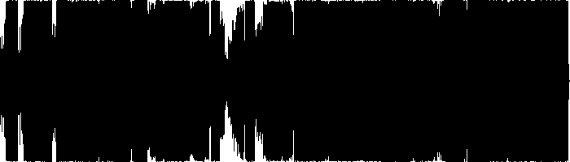
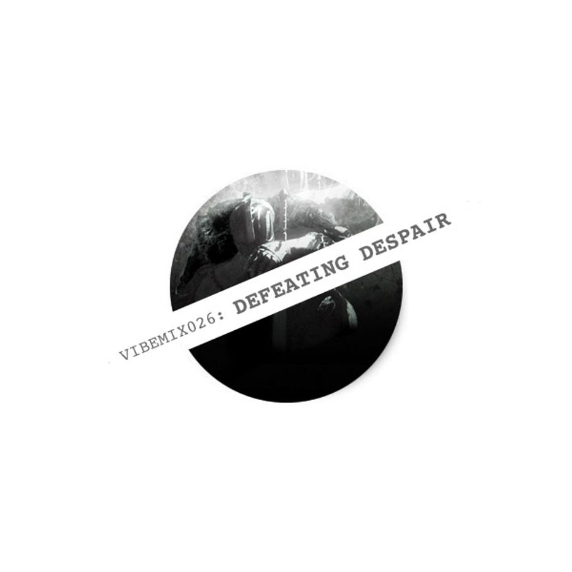

| VIBEMIX026: | DEFEATING DESPAIR | ||
|---|---|---|---|
| 01 | DJ Madd | Gangsta 4 Life (Dark Mix) | 00:00 |
| 02 | Eleven8 | This is Risk | 04:06 |
| 03 | Icicle & Distance | Exhale | 07:46 |
| 04 | Eleven8 | Alone | 12:20 |
| 05 | Nina Simone & Jeff Buckley | Lilac Wine (Marco Rigamonti Rai Tunes Remix) | 16:00 |
| 06 | Y&V | Lune | 21:36 |
| 07 | Ott | Adrift in Hilbert Space | 27:05 |
| 08 | Eleven8 | I Fell Into a Memory | 34:17 |
| 09 | Stickman | Known | 40:12 |
| 10 | DjRum | Honey | 43:24 |
| 11 | Tremble | Vex Fi Dat | 47:03 |
| 12 | Eleven8 | Kaetun | 51:39 |
| 13 | Boxcutter | Brood | 55:46 |
| ℗ © 2016 | VIBERATIONS REC. |
|
 |
1 year of life impressions laid out onto a 1 hour canvas of D-Step music, where 'D' stands for Dark, Deep, Dirty, Depressing, Dreadful, Distorted, Deceiving, Daunting and Desperate.. but still somewhat Delicious - so Delve into it if you like. |